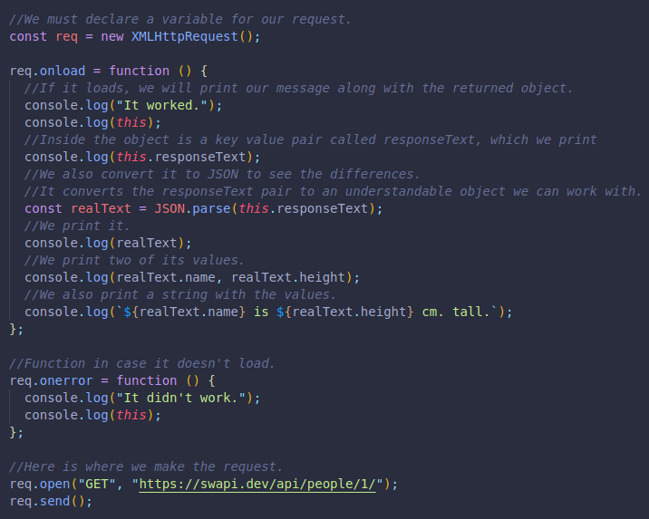
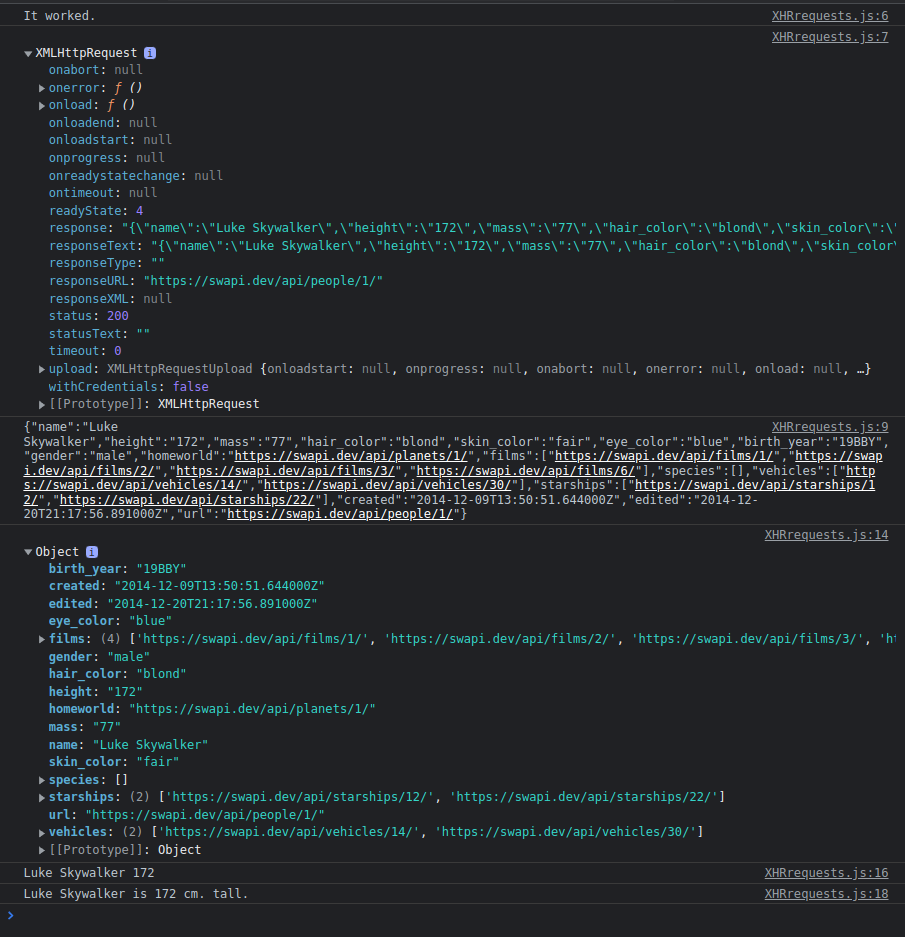
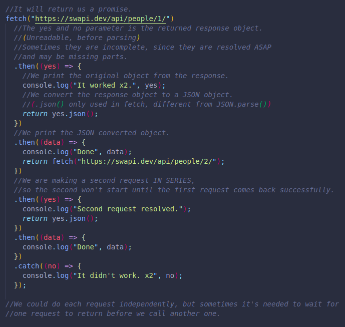
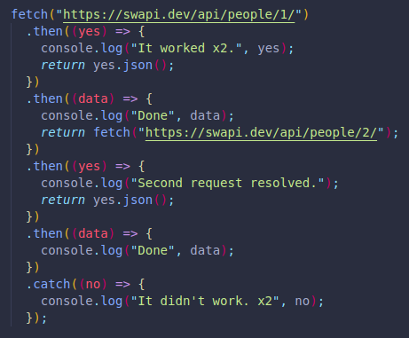
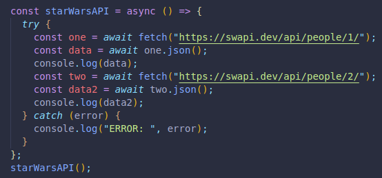
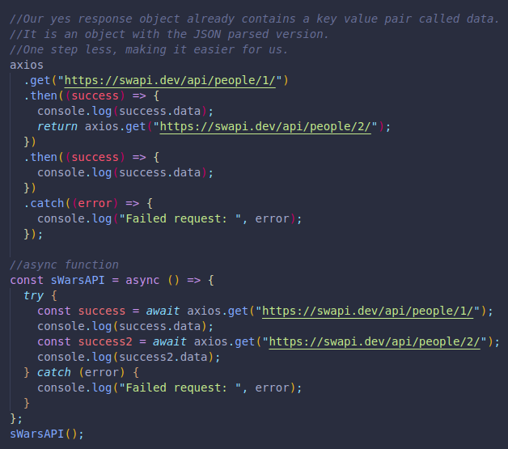
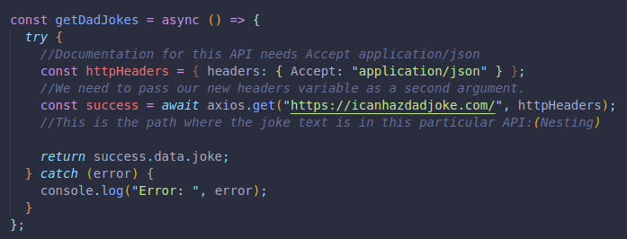
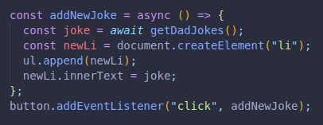

We will be seeing 3 ways to make requests:
This is the original version of sending requests via JS.
PROMISES ARE NOT SUPPORTED(MANY CALLBACKS, MUCH NESTING)
Capitalization needs attention.
Syntax is more difficult to remember.
Here is an example:
RESULTS IN -->
A newer way to make requests, which DOES support promises.
WITHOUT COMMENTS -->
We can also pass our code to an async function for better readability.
The try and catch is used instead of then and catch.
Here we only are getting the converted object back, not the initial unreadable object.
This is a library for our requests.
It uses fetch behind the scenes, but not natively in JS, it must be imported.
We can install it, or just reference it inside a script tag to our HTML document.
Here is an example, including the same promises but in an async function below.
Here is an example of an API that needs Accept to be a specific HTTP Header:
Here we combine DOM manipulation with the API to show something on the user's screen when pressing the button.
CODE -->
